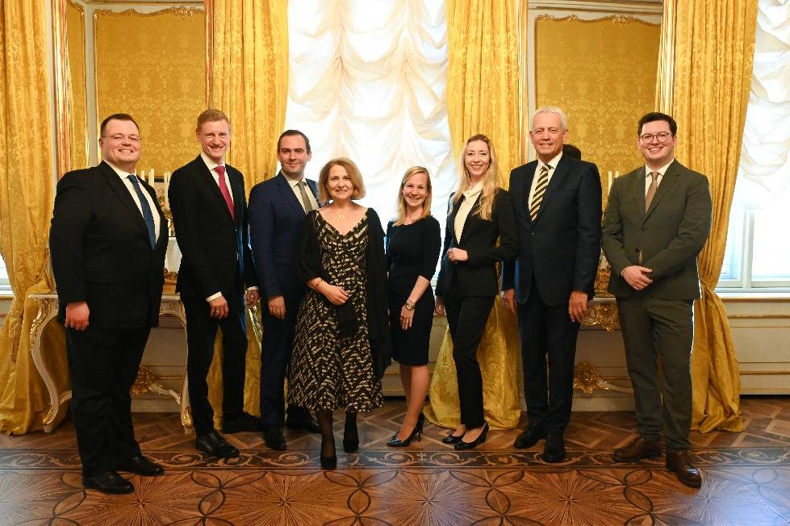

Start › Team
TeamDrei Notare, neun Juristen, fast 30 Mitarbeiterinnen und Mitarbeiter
Das Wichtigste einer Kanzlei sind die Menschen, die dahinter stehen.
Unser Team umfasst mittlerweile drei Notare, drei Notarsubstituten, drei Notariatskandidaten und fast 30 MitarbeiterInnen. Somit steht Ihnen neben unseren Juristen ein Team von gut ausgebildeten und speziell geschulten MitarbeiterInnen zur Verfügung. Wir sind stets bemüht, für sämtliche Anliegen unserer Klienten optimale und individuell passende Lösungen zu finden. Wir verstehen uns als moderner Rechtsdienstleister und versuchen, Ihre Angelegenheiten freundlich, schnell, effizient und zuverlässig abzuwickeln.
Partner und Juristen
Wer Ihre Urkunde unterschreibt


Aufnahmen aus dem Bildbestand der bestehenden Website der Kanzlei.
Mitarbeiter & Abteilungen
Direkt in die richtige Abteilung
Fünf Abteilungen mit eigener E-Mail-Adresse – so landet Ihre Anfrage sofort bei den Kolleginnen und Kollegen, die Ihr Thema bearbeiten.
- Empfang / Beglaubigungen
- service@notare.at
- Verlassenschaftsabteilung
- verlassenschaften@notare.at
- Grundbuchsabteilung
- grundbuch@notare.at
- Firmenbuchabteilung
- firmenbuch@notare.at
- Buchhaltung
- buchhaltung@notare.at
- Kanzlei allgemein
- office@notare.at · +43 1 203 35 05
Stellenangebot
Arbeiten in einer Kanzlei mit drei Notaren
Offene Positionen werden hier veröffentlicht. Unabhängig davon freuen wir uns über Initiativbewerbungen – für die juristischen Abteilungen ebenso wie für Empfang, Grundbuch, Firmenbuch, Verlassenschaft und Buchhaltung.
Warum die Donaustadt
- Zwei Standorte in 1220 Wien – Donauzentrum und IZD Tower
- Team aus drei Notaren, Notarsubstituten, Notariatskandidaten und fast 30 Mitarbeiterinnen und Mitarbeitern
- Alle Kernbereiche im Haus: Beglaubigungen, Grundbuch, Firmenbuch, Verlassenschaft, Buchhaltung
- Ausbildungsweg bis zum Öffentlichen Notar: Notariatsprüfung und siebenjährige Praxiszeit als Notariatskandidat
Fragen zur Bewerbung beantwortet der Empfang unter service@notare.at.